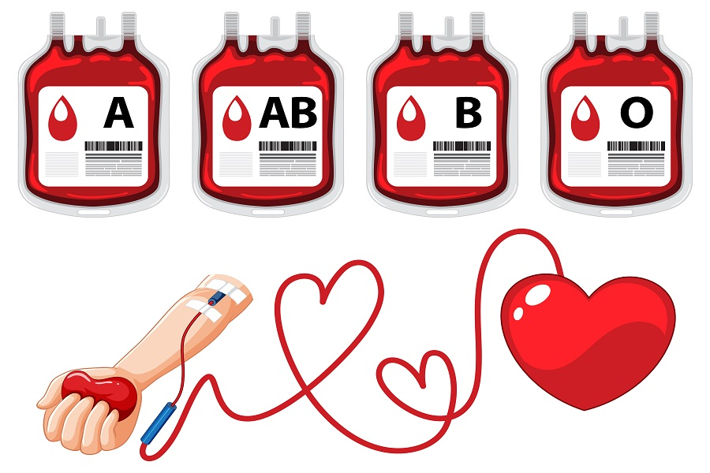
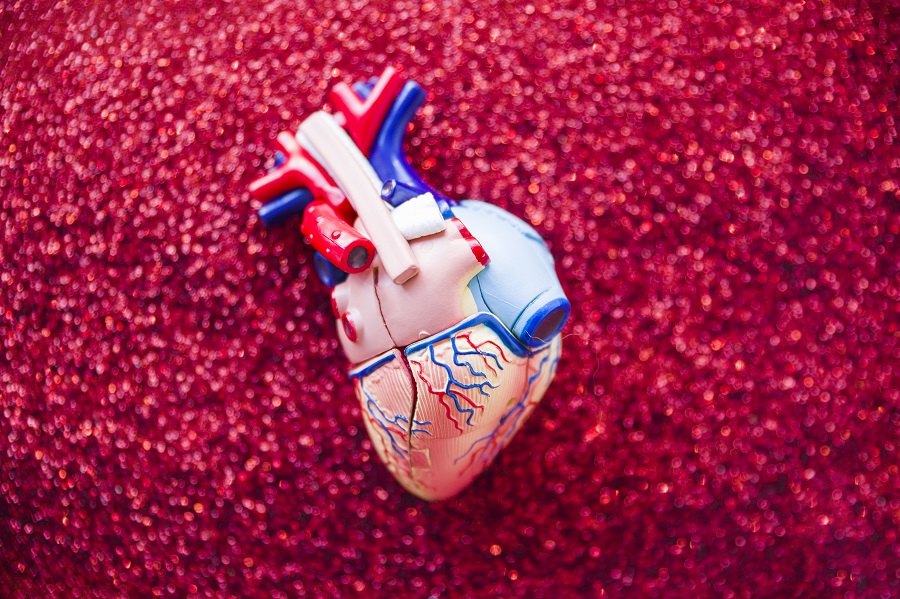

Your generosity saves lives. Blood and organ donation play a vital role in emergency care, surgeries, and life-saving treatments, offering hope and a second chance to countless patients.
Register as an organ or tissue donor or get information on donation procedures
An overview of human organs and tissues that can be donated to save lives
An overview of human organs and tissues that can be donated to save lives
+91 123 456 7890
donorinfo@hospital.com
+91 123 456 7891